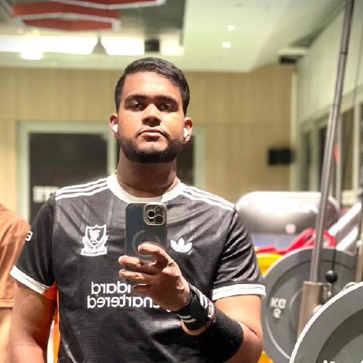

Calendar Recurrence Lab
Cancel a meeting in a recurring series. Which meetings should still appear? Compare two parser revisions across 64 cancellation patterns in my interactive lab.
Try the live demo ↗
Shanjidul Hasan RohanKhilgaon / Dhaka, Bangladesh
Full-stack software engineer
at Staksa Limited
Since October 2026, I’ve worked remotely as an independent contractor at Staksa. I build interfaces with React and Vue, APIs with Node.js and Express, and browser automation with Python.
Explore my work ↓
October 2026 – present · Remote, independent contractor
I work from Khilgaon, Dhaka. My full-stack experience spans React and Vue interfaces, Node.js and Express APIs, Python automation, and a CI/CD pipeline I built with Terraform.
January 2019 – October 2026 · Law firm
I worked as a legal assistant while studying computer science. I also spent time tutoring before joining Staksa.
Contributions
Prevented deadlocks in queued calendar requests, preserved imports with repeated categories, and included ongoing recurring events in narrow searches.
Fixed event IDs when reminders have their own IDs, and surfaced failed calendar property updates.
Improved trend forecasting with large timestamps and restored test coverage for estimators.
Fixed version indexing for objects that implement Python’s integer index protocol. Released in 3.1.1.
#508 ↗Portfolio
Cancel a meeting in a recurring series. Which meetings should still appear? Compare two parser revisions across 64 cancellation patterns in my interactive lab.
Try the live demo ↗My first paid client project was a football club platform. I built its pages with React, connected them to a Cloudflare Workers API and D1 database, and used Cloudinary for media.
A Vue workspace for sharing individual notes. An Express API and PostgreSQL keep track of who can read or edit each one.
View project ↗A student marketplace built with my BRAC University team. We used React, Express and MongoDB for the catalog, ordering and messaging.
Team repository ↗Compare calendar exports, trace reminders to their parent events, and spot duplicated records.
View project ↗The learning repositories behind my notes app, with client and server code to explore.
App ↗ · Server ↗The HTML and CSS behind this site, published with GitHub Pages.
View source ↗I founded Rohan Sporting Club and serve as its chairman. On the pitch, I played goalkeeper for 11 Brother FC. I also served as office secretary of Sikders Development Society.
I attended National Ideal School and Dhaka City College before studying computer science at BRAC University from 2023 to 2026. There, my software engineering team and I built BRACU Bazaar, a student marketplace for browsing, ordering, and messaging.
Off the clock
I’m an easygoing person who loves the sea, takes the scenic route, and can usually find something to laugh about along the way.
Some days I want to sleep in and take things slowly. Other days I want to get on a bike, go for a drive, or take a trip somewhere new. I’m pretty laid-back about the destination. I enjoy a short trip close to home just as much as a longer tour where I have time to explore. I’ve already tried scuba diving. Bungee jumping might be next.
I love cattle year-round. Around Eid al-Adha, I can happily spend hours walking through the cattle markets, stopping whenever a cow catches my eye.
I want to keep growing as a software engineer. My dream for the life I build along the way is to own a big farm, with cows to care for, a pond for the ducks, and hens wandering through the yard.